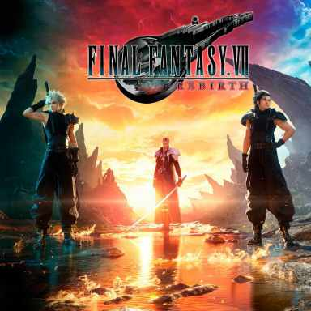

Games
Bienvenidos a la sección de Games de Yoandri el Negro y sus Discípulos
Los Discípulos de Yoandri viven y respiran videojuegos. Aquí compartimos nuestras expectativas, apuestas y noticias más emocionantes sobre los títulos que están marcando tendencia y aquellos que prometen ser los próximos hitos en la industria. Desde lanzamientos épicos hasta sorpresas inesperadas, este es el lugar donde la pasión por los juegos se encuentra con la comunidad.
Juegos en Espera
- - Assassins Creed Shadows : 20/3/2025
- - Death Stranding : 24/6/2025
- - Resident Evil 9 : 2025
- - GTA VI : Otoño 2025
- - Pokemón Legends Z-A : 2025
- - Far Cry 7 : Otoño 2025
- - Halo Combat Evolved Remake : Otoño 2025
- - The Elder Scrolls 6 : 2026
- - The Witcher 4 : 2026
- - Project Orion (secuela de cyberpunk) : 2078
- - Virtua Fighter
- - Khazan: The First Berserker
- - Turok: Origins
- - Intergalactic: The Heretic Prophet
- - Half Life 3: Yoandri DLC : 32/13/7024
- - Ajedrez 4: Yoandri vs Hitler : 34/14/9025
Game Awards 2024

Astro Bot
Votaron:
Balatro
Votaron:
Black Myth: Wukong
Votaron:

Yoansito15
CYBERGHOST10

Tomioka

Elden Ring: Shadow of the Erdtree
Votaron:

Derek10

Final Fantasy VII Rebirth
Votaron:
Metaphor: ReFantazio
Votaron:
Astro Bot